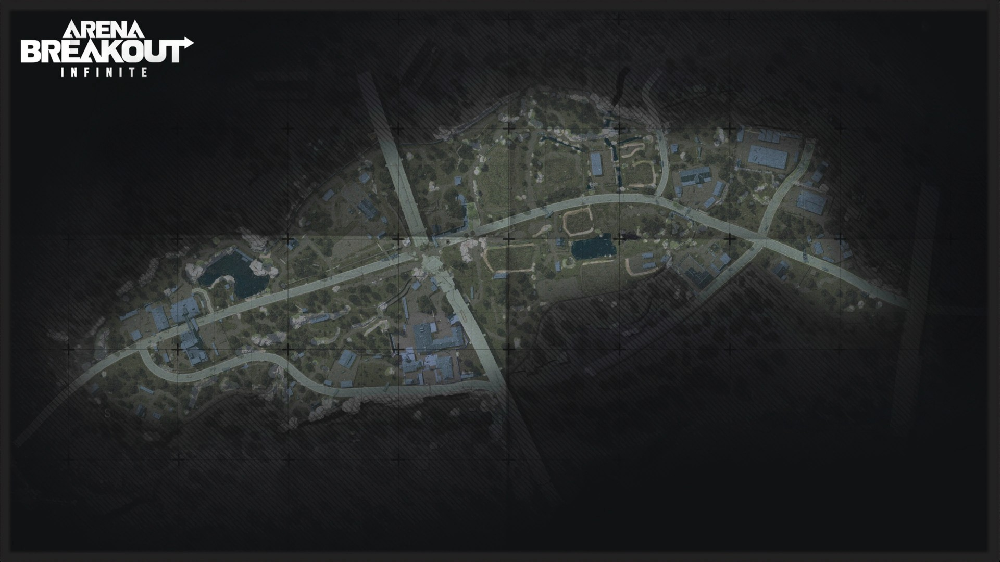

1. Vue d'ensemble
Farm reste la carte de référence de Arena Breakout Infinite : vaste exploitation grainière fictive, lisible, riche en silos, granges et étables. En Saison 7, Farm devient une Heavy Infected Zone : mutants et opérateurs partagent le terrain — gunplay à double menace permanente.
2. Zones de loot à prioriser
- Grain Trade Center — registres, étagères, loot stable en début de raid.
- Étables — coffre fréquent à l'étage, couverture excellente.
- Motel — jusqu'à 3 coffres et plusieurs boîtes d'armes — hotspot contesté, arrivez tôt ou pas du tout.
- Silo North — loot vertical, ligne de vue sur trois axes.
- Documents boxes — les blueprints S7 aiment les tiroirs et vestes : ciblez-les.
3. Route débutant (spawn Ouest)
- Grain Trade Center → 2. Étables (coffre) → 3. Motel (loot chaud) → 4. Extraction Outpost ou Boulder Wall.
- Southern Blockade (2 000 K en Normal ; 6 000 K en Lockdown) — alternative payante si les verts sont tenus.
- Respectez la règle des 5 min : ne poussez pas Motel après T+15 sinon c'est un repaire de tiers-partis.
4. S7 — Farm Heavy Infected
- Mutants : Normal Mutants, Reapers (vert/jaune/gris), Ambushers, Bloaters, Breachers — et Phobos en boss.
- Zombie events : certaines actions déclenchent des hordes — écoutez l'audio, pré-positionnez.
- Field Merchant : un marchand par raid, ouvert à T+5 min — vendre libère des cases, le volume de transactions débloque l'intel de caches. Officiel
- Progression : Zombie Research via les échantillons extraits.
Tactique Anti-Horde Farm
Dum-Dum 9mm (Vector/PCC9 S7 Full-Auto) + Tango suppression = nettoyez la horde, loot, extraction. Ne tirez jamais sur un groupe sans sortie identifiée.
5. Extractions — les réflexes
- Verts : Outpost, Boulder Wall — les plus fiables.
- Payants : Southern Blockade (2 000 K Normal / 6 000 K Lockdown).
- Conditionnels : vérifiez à chaque raid — les conditions évoluent par patch. Ouvrez la carte dès le spawn.
Ce que la Saison 7 a change à Farm
La carte n'est pas restée la même en S7, et ce n'est pas anecdotique : une modification de traversabilité change une route entière, donc change le prix d'une extraction.
- Autour du petit étang du Wheatfield — des ajustements ont été apportés, avec notamment la suppression de murs invisibles et une meilleure traversabilité. Ce qui était un détour baffuant peut désormais être une ligne droite — et inversement.
- Un nouveau conteneur : le collection cabinet — ajouté en S7, avec des ajustements apportés à certains autres conteneurs de la carte.
Source : notes de patch officielles de la beta de la Saison 7 (MoreFun Studios), recopiées et publiées par la communauté. Annonce éditeur.
Zones officielles
Libellés relevés sur la carte officielle du jeu : ces noms sont ceux affichés en jeu et repris par les codes-cle.
- SW Farmhouse — Loot libre
- Grain Trade Center — Bureau verrouillé avec coffre
- Artificial Lake — Extraction possible
- Stables — Spawn de boss possible
- Motel — Spawn de boss possible
- Bridge Fracture (pont) — Bifurcation principale de la carte
- South Wheatfield — Grandes zones ouvertes
- North Wheatfield — Grandes zones ouvertes
- Loading Area — Spawn de boss possible
- Zone de stockage — Boîtes à outils
- Villa — Coffre-fort (pièce verrouillée)
Points d'extraction officiels
Liste exhaustive des sorties de la carte (noms de jeu). Les extractions vertes sont fixes ; les autres dépendent d'un vehicule, d'un abonnement ou d'une zone Nanotech.
- Outpost
- Highway
- Artificial Lake
- Hunter's Path
- Southern Blockade
- Path to Northridge
- Boulder Wall
- Path to Restricted Area
Clés de la carte
Chaque clé s'use à l'usage : 1 point en Normal, 2 en Lockdown, 3 en Forbidden. Une clé à 45 de durabilité tient donc beaucoup moins longtemps en Forbidden.
| Clé | Durabilité | Débloque |
|---|---|---|
| Master Bedroom Key | 45 | 1 Safe 1 Computer 1 Jacket 1 Rare Spawn on Shelve |
| Stables Warehouse Key | 75 | 1 Document Box 1 Jacket 1 Toolbox |
| Motel 201 Key | 45 | 1 Safe 1 Pro first-aid kit 1 Rare spawn on table |
| Motel Main Guest Room Key | 30 | 1 Electronic Safe 1 Safe 1 Winter Coat 1 Premium weapons Container 1 Rare spawn on table |
| Barn Office Key | 45 | 1 Safe 1 Computer 1 Suitcase |
Boss de la carte
Farm compte deux boss : Hecate (Small Hall, Grain Trade Center — une voix de Joel à l'entrée du raid vous prévient qu'elle est là) et Ajax (Motel, Étables, parfois Loading Area). En Heavy Infected Zone, Phobos remplace les boss traditionnels. Approchez avec une armure T3 minimum et surveillez le tour de garde.
Les boss de Farm — ce que dit l'éditeur
La distinction entre ce que l'éditeur a dit et ce que la communauté rapporte compte. Le tableau ci-dessous s'appuie sur la revue exhaustive des 483 publications de MoreFun Studios menée au 1er novembre 2026 : chaque nom de boss vient d'une publication officielle datée.
| Nom | Statut | Ce que l'éditeur en dit |
|---|---|---|
| Hecate | Nommé boss par l'éditeur | « Abyss Captain » dans les notes, « Abyss Squad Leader » dans le communiqué. Mobile et agile, elle contourne. Présente depuis l'extension de Farm en Saison 2. Apparaît à la Small Hall et au Grain Trade Center. Une voix de Joel à l'entrée du raid vous prévient qu'elle est sur la carte. |
| Phobos | Nommé boss par l'éditeur | Le boss des zones infectieuses. Un breacher en armure lourde : il arrache son armure quand il est assez touché et revient plus furieux. Les notes de Saison 7 le présentent comme le mutant le plus formidable. En S7, il est présent dans la Heavy Infected Zone de Farm. |
| Ajax | Attaché à Farm par le texte récit de l'éditeur | Tenait Armory avant que Renoir ne s'en empare ; le texte de la Saison 2 l'oppose à l'Abyss sur Farm. Apparaît au Motel, aux Étables et parfois à la Loading Area. Le mot « boss » n'est pas employé par l'éditeur — ses caractéristiques et son jeton (Pocket Knife) viennent du wiki. |
Cartes interactives
Cartes de référence
Deux ressources de référence pour aller plus loin que cette page :
- ABIBuilder — catalogue des cartes (nouvel onglet) : spawns, clés et stats de loot par carte.
- TCNO — carte interactive de Farm (nouvel onglet) : survol des zones, marqueurs d'extraction et de loot.